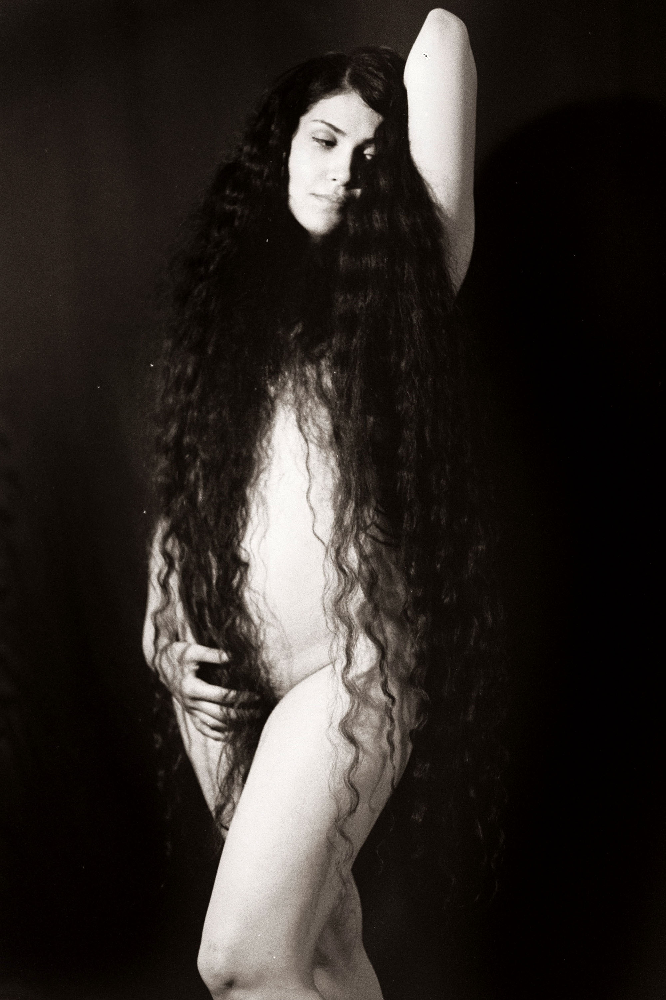

Bio
Sol Stein es fotógrafa nacida en Buenos Aires en el año 1995.
Su trabajo dialoga con un mundo onírico que hace alusión a un erotismo sensible, cálido y dramático. Aborda la creación desde un lado atemporal donde la atmósfera está despojada de evidencias de la época actual.
Romántica y afilada, nos invita a una apertura del cuerpo que apela a desnudar emotividad.

Publicaciones y Exposiciones
- Conozco una Isla, muestra colectiva Sub Cooperativa de Fotografxs | Galería ArtexArte (Buenos Aires, 2020)
- Un Cuerpo, muestra colectiva | Legislatura Porteña (Buenos Aires, 2019)
- ARDE: Encuentro de feminismo, fotografía y derechos humanos | Espacio de la Memoria y DD.HH (Ex-Esma) (Buenos Aires, 2019)
- Muestra de fotografía seleccionada para el premio Estímulo Joven | Galería ArtexArte (Buenos Aires, 2018)
- Revista Colada #33 (Buenos Aires, 2018)
- Dextrose MAG. Muestra colectiva y feria fotográfica | (Ámsterdam, 2018)
- Balam | Picture Room (Brooklyn, NYC, 2019)
- Balam | ArteBa (Buenos Aires, 2019)
- Balam: Presentación | FoLa - Fototeca Latinoamericana - (Buenos Aires, 2018)
- Erótica analógica | LOCAL (Buenos Aires, 2017)
- Paralela Erótica #5 Exposición colectiva (Buenos Aires, 2017)
- 100 Vol I - Nude. Presentación | Les Rituelles (París, 2017) (Denver, Colorado USA, 2017)
- VANITAS. Muestra fotográfica en conjunto con Lucas Toro | Moria Galería (Buenos Aires, 2017) (Publicado en Página12, 2017)
- Paralela #3. Exposición colectiva | (Buenos Aires, 2016)
Premios y Becas
- Solipsis Art | Primer premio categoría Cuerpo Humano (Ecuador, 2019)
- Beca ArtexArte para el Laboratorio II de investigación y producción visual en Sub Cooperativa de fotógrafos 2019
- Seleccionada para premio Estímulo Joven, ArtexArte 2018